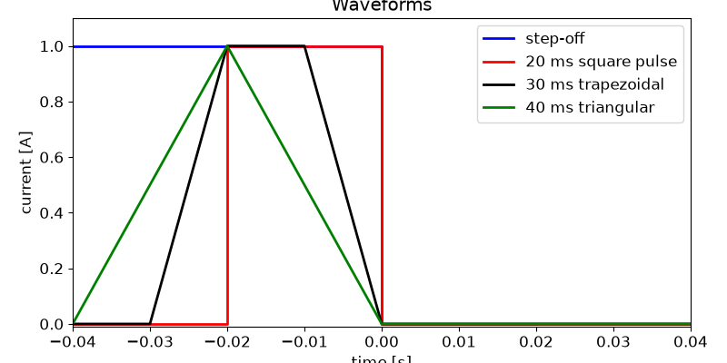
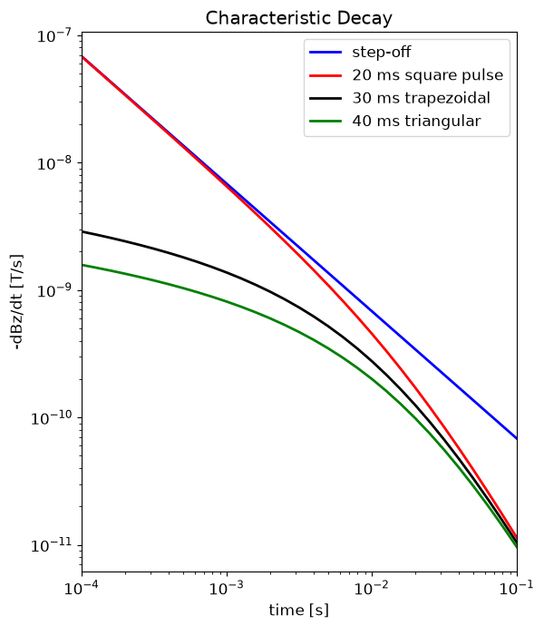

Note
Go to the end to download the full example code.
Response from a Homogeneous Layer for Different Waveforms#
Here we use the module simpeg.electromagnetics.viscous_remanent_magnetization to predict the characteristic VRM response over magnetically viscous layer. We consider a small-loop, ground-based survey which uses a coincident loop geometry. For this tutorial, we focus on the following:
How to define the transmitters and receivers
How to define the survey
How to define a diagnostic physical property
How to define the physics for the linear potential fields formulation
How the VRM response depends on the transmitter waveform
Note that for this tutorial, we are only modeling the VRM response. A separate tutorial have been developed for modeling both the inductive and VRM responses.
Import Modules#
import simpeg.electromagnetics.viscous_remanent_magnetization as vrm
from discretize import TensorMesh
from discretize.utils import mkvc
import numpy as np
import matplotlib.pyplot as plt
import matplotlib as mpl
# sphinx_gallery_thumbnail_number = 2
Define Waveforms#
Under simpeg.electromagnetic.viscous_remanent_magnetization.waveform there are a multitude of waveforms that can be defined (Step-off, square-pulse, piecewise linear, …). Here we define a specific waveform for each transmitter. Each waveform is defined with a diferent set of parameters.
waveform_list = []
# Step-off waveform
waveform_list.append(vrm.waveforms.StepOff(t0=0))
# 20 ms square pulse with off-time at t = 0 s.
waveform_list.append(vrm.waveforms.SquarePulse(t0=0, delt=0.02))
# 30 ms trapezoidal waveform with off-time at t = 0 s.
t_wave = np.r_[-0.03, -0.02, -0.01, 0]
I_wave = np.r_[0.0, 1.0, 1.0, 0]
waveform_list.append(vrm.waveforms.ArbitraryPiecewise(t_wave=t_wave, I_wave=I_wave))
# 40 ms triangular waveform with off-time at t = 0 s.
t_wave = np.r_[-0.04, -0.02, 0]
I_wave = np.r_[0.0, 1.0, 0]
waveform_list.append(vrm.waveforms.ArbitraryPiecewise(t_wave=t_wave, I_wave=I_wave))
# Plot waveforms
fig = plt.figure(figsize=(8, 4))
mpl.rcParams.update({"font.size": 12})
ax1 = fig.add_axes([0.1, 0.1, 0.85, 0.85])
ax1.plot(np.r_[-0.04, 0.0, 0.0, 0.02], np.r_[1, 1, 0, 0], "b", lw=2)
ax1.plot(np.r_[-0.04, -0.02, -0.02, 0.0, 0.0, 0.04], np.r_[0, 0, 1, 1, 0, 0], "r", lw=2)
ax1.plot(np.r_[-0.04, -0.03, -0.02, -0.01, 0, 0.04], np.r_[0, 0, 1, 1, 0, 0], "k", lw=2)
ax1.plot(np.r_[-0.04, -0.02, 0, 0.04], np.r_[0, 1, 0, 0], "g", lw=2)
ax1.set_xlim((-0.04, 0.04))
ax1.set_ylim((-0.01, 1.1))
ax1.set_xlabel("time [s]")
ax1.set_ylabel("current [A]")
ax1.set_title("Waveforms")
ax1.legend(
["step-off", "20 ms square pulse", "30 ms trapezoidal", "40 ms triangular"],
loc="upper right",
)

<matplotlib.legend.Legend object at 0x7fb82a30dfd0>
Survey#
Here we define the sources, the receivers and the survey. For this exercise, we are modeling the response for single transmitter-receiver pair with different transmitter waveforms.
# Define the observation times for the receivers. It is VERY important to
# define the first time channel AFTER the off-time.
time_channels = np.logspace(-4, -1, 31)
# Define the location of the coincident loop transmitter and receiver.
# In general, you can define the receiver locations as an (N, 3) numpy array.
xyz = np.c_[0.0, 0.0, 0.5]
# There are 4 parameters needed to define a receiver.
dbdt_receivers = [
vrm.receivers.Point(xyz, times=time_channels, field_type="dbdt", orientation="z")
]
# Define sources
source_list = []
dipole_moment = [0.0, 0.0, 1]
for pp in range(0, len(waveform_list)):
# Define the transmitter-receiver pair for each waveform
source_list.append(
vrm.sources.MagDipole(
dbdt_receivers, mkvc(xyz), dipole_moment, waveform_list[pp]
)
)
# Define the survey
survey = vrm.Survey(source_list)
Defining the Mesh#
Here we create the tensor mesh that will be used for this tutorial example. We are modeling the response from a magnetically viscous layer. As a result, we do not need to model the Earth at depth. For this example the layer is 10 m thick.
Defining an Amalgamated Magnetic Property Model#
For the linear potential field formulation, the magnetic viscosity characterizing each cell can be defined by an “amalgamated magnetic property” (see Cowan, 2016). Here we define an amalgamated magnetic property model. For other formulations of the forward simulation, you may define the parameters assuming a log-uniform or log-normal distribution of time-relaxation constants.
# Amalgamated magnetic property for the layer
model_value = 0.0001
model = model_value * np.ones(mesh.nC)
# Define the active cells. These are the cells that exhibit magnetic viscosity
# and/or lie below the surface topography.
ind_active = np.ones(mesh.nC, dtype="bool")
Define the Simulation#
Here we define the formulation for solving Maxwell’s equations. We have chosen to model the off-time VRM response. There are two important keyword arguments, refinement_factor and refinement_distance. These are used to refine the sensitivities of the cells near the transmitters. This improves the accuracy of the forward simulation without having to refine the mesh near transmitters.
# For this example, cells lying within 2 m of a transmitter will be modeled
# as if they are comprised of 4^3 equal smaller cells. Cells within 4 m of a
# transmitter will be modeled as if they are comprised of 2^3 equal smaller
# cells.
simulation = vrm.Simulation3DLinear(
mesh,
survey=survey,
active_cells=ind_active,
refinement_factor=2,
refinement_distance=[2.0, 4.0],
)
Predict Data and Plot#
# Predict VRM response
dpred = simulation.dpred(model)
# Reshape for plotting
n_times = len(time_channels)
n_waveforms = len(waveform_list)
dpred = np.reshape(dpred, (n_waveforms, n_times)).T
# Characteristic VRM decay for several waveforms.
fig = plt.figure(figsize=(6, 7))
ax1 = fig.add_axes([0.15, 0.1, 0.8, 0.85])
ax1.loglog(time_channels, -dpred[:, 0], "b", lw=2)
ax1.loglog(time_channels, -dpred[:, 1], "r", lw=2)
ax1.loglog(time_channels, -dpred[:, 2], "k", lw=2)
ax1.loglog(time_channels, -dpred[:, 3], "g", lw=2)
ax1.set_xlim((np.min(time_channels), np.max(time_channels)))
ax1.set_xlabel("time [s]")
ax1.set_ylabel("-dBz/dt [T/s]")
ax1.set_title("Characteristic Decay")
ax1.legend(
["step-off", "20 ms square pulse", "30 ms trapezoidal", "40 ms triangular"],
loc="upper right",
)

CREATING T MATRIX
CREATING A MATRIX
<matplotlib.legend.Legend object at 0x7fb828fa8a90>
Total running time of the script: (0 minutes 4.335 seconds)
Estimated memory usage: 332 MB